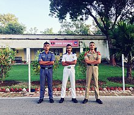
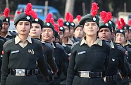

National Cadet Corps (India)

NCC Parade

NCC cadets in off-parade uniforms (left to right: Air Force, Navy and Army)
History
The NCC is the largest uniformed youth organization. Its motto is 'Unity and Discipline'.
The NCC in India was formed the National Cadet Corps Act of 1948. It can be traced back to the ‘University Corps’, which was created under the Indian Defence Act 1917, with the objective to make up for the shortage in the Army. In 1920, when the Indian Territorial Act was passed, the ‘University Corps’ was replaced by the University Training Corps (UTC). The aim was to raise the status of the UTC and make it more attractive to the youth. The UTC Officers and cadets dressed like the army. It was a significant step towards the Indianisation of armed forces. It was rechristened as UOTC so the National Cadet Corps can be considered as a successor of the University Officers Training Corps (UOTC) which was established by the British Government in 1942. During World War II, the UOTC never came up to the expectations set by the British. This led to the idea that some better schemes should be formed, which could train more young men in a better way, even during peace. A committee headed by H N KUNZRU recommended a cadet organization to be established in schools and colleges at a national level. The National Cadet Corps Act was accepted by the Governor General and on 15 July 1948 the National Cadet Corps came into existence.

Female Cadets of the NCC during Republic Day Preparations
During Indo-Pakistani war of 1965 & Bangladesh-Pakistani war of 1971, NCC cadets were second line of defence. They organized camp to assist ordnance factories, supplying arms and ammunition to the front and also were used as patrol parties to capture enemy paratroopers. The NCC cadets also worked hand in hand with the Civil defence authorities and actively took part in rescue works and traffic control.[3]
After the 1965 and 1971 wars, the NCC syllabus was revised. Rather than just being a second line of defence, the revised NCC syllabus laid greater stress on developing qualities of leadership and officer like qualities. The military training which the NCC cadets received was reduced and greater importance was given to social service and youth management.
Terms of Use Privacy Desktop